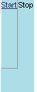

<box>
| Attributes | Common Children |
| align | <menu> |
| class | <titledbutton> |
| id | <text> |
| flex | <image> |
| width | |
| height | |
| autostretch | |
| orient |
The <box> widget provides a general purpose and flexible layout mechanism. Using boxes, you can specify the position and relationship of almost any combination of widgets in the UI. Many XUL widgets inherit from boxes, including:
Boxes use flex to stretch their positions in a UI. Springs with flex push back against boxes, constraining them within the parent container. The following example shows a simple box and spring layout using all of box's basic attributes:
align is an optional attribute that specifies the alignment of the current element's children.Syntax
<element align="left | right | center | vertical | horizontal">Example
Notes
<box width="150" orient="vertical" autostretch="never" style="border: solid 2px; background-color: lightblue" align="right">
<titledbutton value="button1" style="font-size: 12pt"/>
<titledbutton value="button2" style="font-size: 12pt"/>
<titledbutton value="button3" style="font-size: 12pt"/>
</box>


The default value for align is left. In addition to the left, center, and right values, align also supports "horizontal" and "vertical", though these latter two are both deprecated. Remember that the attribute referes to the alignment of the children and not the parent element.
flex is used to position widgets and establish their flexibility relative to one another.
Syntax
<element flex="integer | percentage">Examples
Notes

Flex is one of the principal ways to size and arrange widgets in the UI. Using boxes, springs, flex, and the functional XUL widgets you need, you can layout the interface in any way you choose.In the first example above, the inner box widget is vying for space with the spring widget. Both of them have been given flex, but the greater flex of the spring widget has resulted in a spring elememt (below the two buttons) that is three times as tall as the buttons themselves.
In the second example, the percentage of flex that the button box has is twice that of the spring widget, and so the button box is twice as tall. In these examples, flexibility controls the height because the alignment of the containing box has been set to vertical rather than horizontal. Flex always reflects the orientation of the container: widgets flex into the space provided for them by the containing widget.
When flexible widgets (widgets for which some flex value has been specified) are arranged with other, unflexible widgets, the flex of the flexible widgets is always understood to be complete. The inflexible widgets in this case take up only as much space as they need to fulfill their other requirements: that their values be displayed, that the style considerations like padding and borders are met, and so on.
width is an optional attribute that specifies the width of the box in pixels or percentage of available space.Syntax
<element width="width in pixels | width as percentage">Example
Notes<menubar width="100px" style="background-color:lightblue;">
See height for an example of using a percentage value. When you do not specify a width of height, boxes and other elements will rely upon flex to figure out how much space to occupy. With no flex and no size attributes, a box will take only as much space as is needed to display whatever value or name attributes that have been specified.
height is an optional attribute that specifies the width of the box in pixels or percentage of available space.Syntax
<element height="height in pixels | height as percentage">Example
Notes<menubar height="10%" style="background-color:lightblue;">
See width for an example of using an absolute value (i.e., a specific number of pixels). When you do not specify a width of height, boxes and other elements will rely upon flex to figure out how much space to occupy. With no flex and no size attributes, a box will take only as much space as is needed to display whatever value or name attributes that have been specified.
autostretch is an optional attribute that turns a box's autostrething on and off.Syntax
<element autostretch="never | always">Example
Notes<box autostretch="never" style="background-color:lightblue;">
The autostretch attribute gives you control over a box's tendency to stretch its child elements to fit in the opposite direction of the box. When a box is aligned vertically, for example, it will stretch its children out horizontally automatically unless you specify otherwise. The figure below demonstrates how autostretch prevents the stretching of the box's button children.
| <box style="background-color: lightblue; border: solid 2px"
orient="vertical">
<titledbutton value="button1" style="font-size: 10pt"/> <titledbutton value="button2" style="font-size: 14pt"/> <titledbutton value="button3" style="font-size: 24pt"/> <titledbutton value=" default stretching " style="font-size: 10pt"/> </box> <box style="background-color: lightblue; border: solid 2px" autostretch="never"
orient="vertical">
|
 |
orient is an optional attribute that specifies the alignment of the children of the current element.Syntax
<element orient="vertical | horizontal">Example
Notes
<menubar orient="vertical"
style="background-color:lightblue;">

The orient attribute takes the place of align as the way to orient an element's child elements either end-to-end or top-to-bottom. Though align still accepts "vertical" and "horizontal" as values, these are now deprecated.